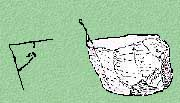
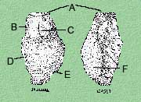
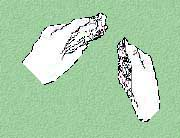
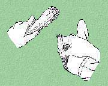
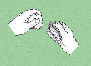
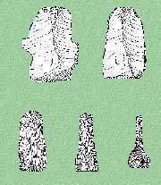
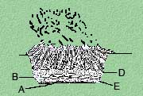

Knapping
Flintknapping is the making of flaked or chipped stone tools. This technology was used in historic times to manufacture gun flints and in prehistoric times to make spear and dart points, arrow heads, knives, scrapers, blades, gravers, perforators, and many other tools.

Flintknapping requires the ability to control the way rocks break when they are struck. The best rock is somewhat brittle and uniform in texture and structure, lacking frost fractures, inclusions, or other flaws. This type of rock is very fine grained or non-grained. The best rocks for flint-knapping are chert, flint, chalcedony, quartzite, jasper, and obsidian. Chert and flint are silica-rich rocks found throughout the Midwest in limestone and dolomite deposits. These rock types, when struck with another rock, piece of antler, or bone, will fracture or break in a characteristic pattern called a conchoidal fracture. This creates a rock fragment called a flake.

Flakes have specific features identifying them as the result of human hands rather than natural processes. All flakes typically have a striking platform (A), bulb of percussion (B), eraillure (C), radial fissures (D), ripple marks (E), and negative flake scars on the dorsal side from earlier flake removals (F). You can think of these features in terms of dropping a rock in a still pond: the rock hitting the water (A), the splash (B), the drops that fly away from the splash (C), the drops that fall back near the splash (D), and the concentric waves moving outward (E). Naturally broken rocks usually do not exhibit these features.
The production process begins with a piece of raw material, called a core. Flakes are removed by striking the edge of the core with a sharp, forceful blow, in what is called percussion flaking.

Percussion flakes are removed using a hard hammer or soft hammer. Hard hammers are typically made of igneous or metamorphic rocks such as granite, quartz, basalt, or gneiss. Hard hammers tend to pass most of their energy to the core without absorbing much of the force, so they are used to flake large cores of hard materials. A carefully controlled strike is always more important than a hard strike when using a hard hammer.

A soft hammer is made of a piece of antler, although bone and some very hard woods can be used. Moose, deer, elk, and caribou antler are all usable soft hammers. Soft hammers are used when flaking very brittle material such as obsidian or when greater control is needed. Soft hammers will not pass as much energy to the core and will absorb some of the force, affording greater control of the size and shape of the removed flake. Edges being worked must be ground dull prior to flake removal. This dulling helps prevent edge collapse. A piece of sandstone, very soft limestone, or other soft rock may be used to dull the edge.

Indirect percussion flaking is a process where some device holds the core or flake being worked, leaving both hands free to drive off flakes with greater force or precision. One hand holds a punch-like piece of antler or bone against the core while the other holds a hammer and strikes the punch to drive off flakes. This combines the accuracy of pressure flaking with the force of percussion flaking.
Another method of flake removal is pressure flaking.

The knapper detaches flakes by applying leverage (pressure) to an edge. An antler tine, piece of bone, or hard wood sharpened for accurate application of force is needed for flake removal. Downward and outward pressure pops the flakes off. This method can straighten and sharpen edges of a finished tool or shape a tool from flake to final form.
Flakes can be used for simple tasks or can be further reduced to make various types of tools. A small amount of shaping can turn a flake into a knife, scraper, or other useful implement.
A biface is any chipped tool produced by flaking of both surfaces. Bifaces are typically formed in the following reduction sequence:

Each stage reflects progressive reduction of a core or large flake. The desired product might be a projectile point, knife, or drill. Bifaces and other tools were usually repaired and resharpened frequently, extending their use-lives but reducing their sizes until they were discarded.
Heat treatment improves the knapping quality of some raw materials. It requires gradual application of high heat. The color and luster of the rock often change noticeably, and the flaking quality of the rock improves because its texture becomes smoother and less grainy. Heat treatment is usually applied to small and medium cores, flakes, or bifaces; larger pieces are difficult to heat evenly and thoroughly. To begin the process, a good sized fire is burned down to glowing coals and hot sand. A pit is excavated and the remains of the old fire placed into it (A and B). Already warmed chert pieces are placed into the pit (C) and covered with sand. A new fire is built and allowed to burn out over a 24 hour period before digging up the heat treated pieces. Care must be taken, for heat treatment can cause rocks to fracture explosively.
Flintknapping is a fun and interesting hobby which can provide considerable insight into the lives of prehistoric peoples. Chert, flint, and other rocks usable for flint-knapping can be acquired from local quarry operators, rock shops, stream beds, and other gravels, or by knowing your local geology. Antler and bone for hammers can be obtained from your local meat locker or butcher.

Flintknapping is very dangerous. Cuts are common and can be severe. Always wear safety glasses, knap outside, and make it easy to clean up by using a tarp. Work where your flakes will not be mistaken for a real archaeological site, because the methods described here can produce flakes identical to prehistoric flakes. Try using your flaked stone tools in your garden or kitchen to see how well they work and learn more about the lifeways of stone age peoples.